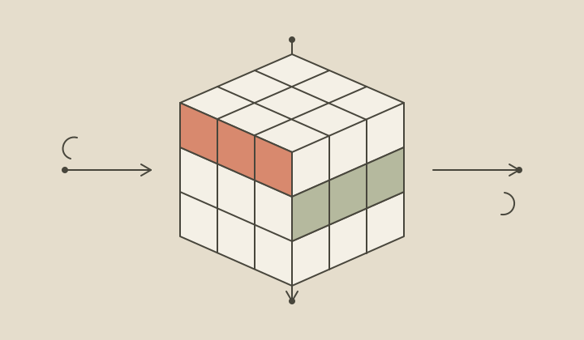

AI infrastructure
openFuyao
Building infrastructure for AI inference.
Prefill–decode disaggregation, distributed KVCache transfer, and AscendCacheTier for cloud-native deployment of models including DeepSeek on Ascend 910B.
60–80%improvement in Store interface performance, in collaboration with the Mooncake community.
Explore openFuyao